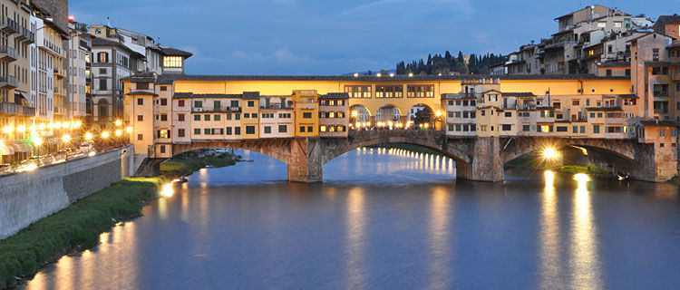
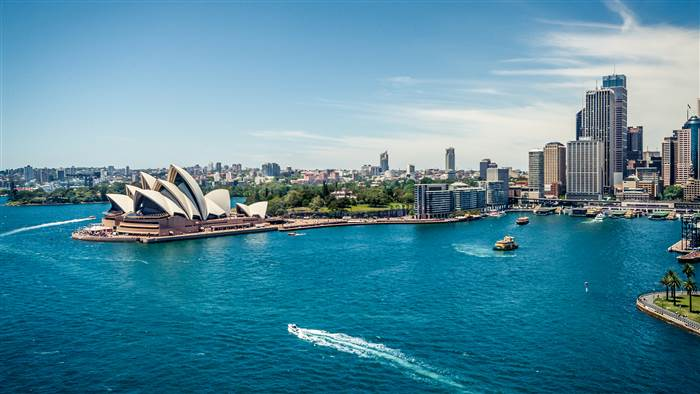
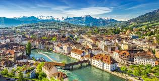

Where in the world would you enjoy your vacation time the most?
To better understand where you should travel to, let's see what kind of vacations interest you:
, you selected all 'A' answers. Your next trip should be to Kathmandu, Nepal!

For many, stepping off a plane into Kathmandu is a pupil-dilating experience, a riot of sights, sounds and smells that can quickly lead to sensory overload. Whether you’re barrelling through the traffic-jammed alleyways of the old town in a rickshaw, marvelling at the medieval temples or dodging trekking touts in the backpacker district of Thamel, Kathmandu can be an intoxicating, amazing and exhausting place.
, you selected all 'B' answers. Your next trip should be to Florence, Italy!

Cradle of the Renaissance, romantic, enchanting and utterly irresistible, Florence (Firenze) is a place to feast on world-class art and gourmet Tuscan cuisine.
, you selected all 'C' answers. Your next trip should be to Sydney, Australia!

Sydney, spectacularly draped around its glorious harbour and beaches, has a visual wow factor like few other cities. Scratch the surface and it only gets better.
, your next trip should be to Lucerne, Switzerland!

Recipe for a gorgeous Swiss city: take a cobalt lake ringed by mountains of myth, add a well-preserved medieval Altstadt (Old Town) and a reputation for making beautiful music, then sprinkle with covered bridges, sunny plazas, candy-coloured houses and waterfront promenades. Lucerne is stunning, and deservedly popular since the likes of Goethe, Queen Victoria and Wagner savoured its views in the 19th century. Legend has it that an angel with a light showed the first settlers where to build a chapel in Lucerne, and today it still has amazing grace.
, your next trip should be to Barcelona, Spain!

Barcelona is an enchanting seaside city with boundless culture, fabled architecture and a world-class drinking and dining scene.
, we couldn't find a perfect place for you on this quiz. But the world is still your oyster! Get out there and explore it.